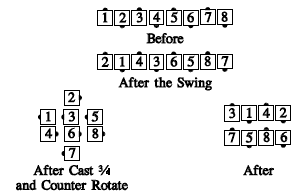

From a tidal wave: All Swing. The center six Cast 3/4, while the ends Counter Rotate 1/4, meet the very centers, Single Hinge & Spread. The other four do the centers' part of a Cast a Shadow (i.e., leaders "shadow", trailers Extend, Hinge, and Extend).

© Copyright 1983, 1986-1988, 1995-2017 Bill Davis, John Sybalsky and CALLERLAB Inc., The International Association of Square Dance Callers. Permission to reprint, republish, and create derivative works without royalty is hereby granted, provided this notice appears. Publication on the Internet of derivative works without royalty is hereby granted provided this notice appears. Permission to quote parts or all of this document without royalty is hereby granted, provided this notice is included. Information contained herein shall not be changed nor revised in any derivation or publication.